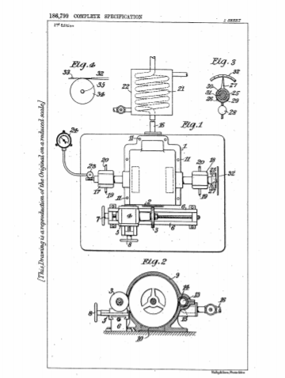

Descarga la patente original en esté enlace


Yo, Nikola Tesla, ingeniero eléctrico y mecánico, ciudadano de los Estados Unidos de América, de No. 8, West 40th Street, Nueva York, NY, EE. UU., Declaro por la presente la naturaleza de esta invención y de qué manera la misma debe realizarse, que se describirá y determinará en particular en y mediante la siguiente declaración:
En el funcionamiento de la maquinaria, el equilibrado exacto de las partes giratorias es de gran importancia económica, ya que anualmente se gastan grandes sumas de dinero debido a deficiencias a este respecto, lo que resulta en pérdida de energía, desgaste indebido, interrupción del servicio y accidentes de un naturaleza más o menos grave.
Antes del desarrollo de los aparatos modernos de alta velocidad, se dependía completamente del equilibrio estático e incluso ahora este es el caso con frecuencia. La tendencia en constante aumento en la dirección de la alta velocidad trajo consigo la necesidad de equilibrado dinámico y se idearon varias formas de aparatos para este propósito.
El proceso que he inventado permite que esto se haga de forma rápida y con un alto grado de precisión y, en pocas palabras, consiste en rotar el cuerpo para equilibrarlo, soportarlo de manera flexible, a una velocidad adecuada y eliminar el exceso de material de su lado más pesado por abrasión. hasta que se alcance el grado deseado de perfección del equilibrio.
Como medio para este fin, puedo emplear una muela, un chorro de arena o un chorro de otra sustancia abrasiva. Se podría inferir naturalmente que el contacto de una muela de esmeril o de carborundo con la parte de una máquina que gira rápidamente produciría golpes y vibraciones peligrosas, y también que el rectificado a velocidades mucho más altas que las habituales ahora podría lograrse satisfactoriamente. Pero aunque estas suposiciones teóricas parecen sólidas, no he encontrado dificultades de este tipo y he realizado la operación con la mayor facilidad y éxito. Esto lo atribuyo a la inercia y al impulso del cuerpo que gira, lo que lo hace insensible a las perturbaciones asincrónicas que pueda producir la rueda. Sin embargo, en ciertos casos puede ser más conveniente o preferible efectuar la eliminación del material sobrante mediante un chorro de sustancia abrasiva a alta velocidad aplicado tangencialmente a la pieza a equilibrar. Para obtener los mejores resultados, es esencial que este último, al girar, sea capaz de un desplazamiento apreciable de su centro de gravedad del eje de simetría. Esto se logra apoyándolo en un eje de flexibilidad adecuada o, si su propio eje no es lo suficientemente flexible, en cojinetes montados de forma flexible. Además, es de gran importancia, para evitar vibraciones que puedan interferir con la correcta aplicación del proceso, que la velocidad a la que se efectúa el rectificado tenga una relación definida con la crítica, correspondiente a la vibración natural fundamental. y se debe observar la siguiente regla: Si el sistema funciona en dos cojinetes, la velocidad de rectificado debe ser un múltiplo impar o submúltiplo de la crítica. Si, por otro lado, el sistema se apoya en un solo lado, la velocidad debe ser un múltiplo par o submúltiplo de la crítica.
Cuando la estructura gira a la velocidad adecuada, pongo la rueda abrasiva en contacto operativo con ella en una región periférica u otra región adecuada y amolado el material. A medida que la acción continúa, la flexión del eje disminuye hasta que, finalmente, su centro de simetría coincide con el centro de gravedad del sistema, o casi. Esto puede ser observado en muchos casos por un operador competente sin el uso de un dispositivo especial, pero se pueden emplear medios visibles o audibles adecuados para este propósito.
Previo a la aplicación del proceso es recomendable hacer funcionar la pieza a muy baja velocidad y ajustarla con la rueda. Si existe una flexión apreciable del eje cuando el sistema descansa horizontalmente, el rectificado puede realizarse en posición vertical cuando está en equilibrio estático. Una pieza que se corre sobre un eje rígido puede montarse sobre otra de la flexibilidad adecuada; y como existen limitaciones en la precisión del ajuste de un manguito cilíndrico, puedo emplear uno ahusado para asegurar una mayor precisión. Sin embargo, generalmente se pueden obtener resultados satisfactorios armando el eje rígido con extensiones flexibles o manteniéndolo en cojinetes soportados de manera flexible. En todos los casos es deseable inundar este último con lubricante de considerable viscosidad.
Mi invención se entenderá claramente con referencia a los dibujos adjuntos que ilustran una forma de aparato que he ideado para el equilibrado rápido y conveniente de cuerpos tales como rotores de mis turbinas de vapor y gas. La figura 1 muestra la disposición general de los componentes que comprenden, una carcasa con una abertura en un lado, un mecanismo de torno para alimentar la rueda, un tacómetro que permite tomar lecturas instantáneas de la velocidad, un instrumento para la indicación visual continua del grado. de precisión obtenida y un precalentador del medio elástico como el aire comprimido utilizado en la operación; La figura 2 representa una sección a través de la carcasa en el plano de un disco de rotor, exponiendo dicha abertura y también la boquilla de la turbina; La figura 3 es una vista de las partes esenciales del instrumento indicador de equilibrio y la figura.
Llamando la atención específicamente sobre la figura nombrada en primer lugar, hay una carcasa que encierra un rotor impulsado por aire o vapor que se debe equilibrar y que se muestra como abierto en 2 con el fin de permitir que la rueda 3 entre en contacto operativo con las superficies a ser molido. Se puede emplear cualquier accionamiento adecuado, pero normalmente recurro al eléctrico, montando la rueda directamente en el eje de un motor 4 fijado a un carro de torno 5 que se desliza sobre los rieles 6, 6 y está provisto de medios 7 y 8 para alimentar la rueda. , respectivamente, a lo largo del eje del eje del motor y en ángulo recto con el mismo.
Como se muestra en la Fig.2, la carcasa está dividida horizontalmente en la línea central en dos fundiciones 9 y 10, cuidadosamente cepilladas para asegurar que lleguen a la misma posición cuando se ensamblan, evitando el desplazamiento lateral mediante pasadores 11, 11 (Fig. . 1) que se aprietan bien en la fundición 9 o 10. Estos están agrandados y perforados en un lado y en el orificio se ajusta cómodamente un cilindro hueco 13 con boquilla 14 y abertura de entrada 15 directamente conectada al tubo de suministro 16 provisto de una válvula de control adecuada. La abertura en 2 para la entrada de la rueda 3 se muestra como una abertura simple a través de la carcasa, pero en ciertos casos introduzco la rueda a través de una ampliación de la carcasa similar a la ampliación mostrada en la Fig.2 en el lado derecho, que es a menudo es conveniente cuando se equilibra un rotor en su propia carcasa.
Con referencia de nuevo a la figura 1, los cojinetes 17 y 18 también están divididos horizontalmente en el plano de la junta de la carcasa y sus partes superior e inferior pueden ser integrales con las piezas fundidas correspondientes 9 y 10 con el fin de ahorrar trabajo y tiempo. Las partes inferiores de los cojinetes están equipadas con tuberías de suministro y descarga de aceite 19 y 20. La tubería de suministro 16 se muestra conectada a una bobina 21 de un calentador 22 que está equipado con una válvula para controlar el flujo del medio de calentamiento y puede ser de cualquier construcción conocida. Se proporciona un tornillo sin fin 23 en un extremo del eje del rotor para hacer funcionar el tacómetro 24 a través de una conexión flexible. Este dispositivo puede ser de cualquier marca, pero me parece ventajoso utilizar el tipo de fricción de aire. En el otro extremo del eje está montado el indicador de equilibrio 25 (mostrado en detalle Fig. 3) que consta de un miembro 26 con un puntero 27 en la parte superior y un peso 28 montado de forma ajustable en la parte inferior. Este miembro se apoya en la pista exterior 29 de un rodamiento de bolas 30, estando el interior 31 fijado al eje, y por tanto es susceptible de oscilación, estando determinado el esfuerzo giratorio necesario para producir una determinada deflexión del mismo por la posición del peso. Una escala graduada 32 está unida a la parte estacionaria del instrumento que está convenientemente colocada para que el operador la observe.
Se puede emplear sustancialmente el mismo aparato, con la excepción de la rueda 3, en relación con el dispositivo ilustrado esquemáticamente en la Fig.4, en el que un accesorio 32 adecuado proyecta un chorro 33 de sustancia abrasiva tangencialmente sobre el cuerpo 34 que se va a equilibrar. soportado sobre un eje flexible 35. En este caso, por supuesto, el dispositivo está montado en el carro 5 para permitir la alimentación en dos direcciones.
El equilibrado se realiza de la siguiente manera: estando el rotor en posición de rectificado de la pieza fundida 9 y se colocan las tapas de los cojinetes 17 y 18, el lubricante es forzado a través de los tubos 19 y 20 y un fluido motriz como aire comprimido, admitido en la boquilla 14, su la cantidad y la temperatura están reguladas, respectivamente, por válvulas en la tubería de suministro 16 y el calentador 22. El fluido, al atravesar el rotor y salir a través de la carcasa inferior, imparte movimiento al primero y lo lleva a la velocidad deseada, determinada mediante la lectura del tacómetro 24. La rueda abrasiva 3 se alimenta ahora a través del rotor y se anota la indicación del instrumento de equilibrado en la escala graduada. Al principio, es probable que la deflexión del puntero sea considerable debido al hecho de que cualquier vibración, aunque sea leve, del eje, aumenta mucho la presión sobre las bolas y, en consecuencia, el par del instrumento. A medida que mejora el equilibrio, la deflexión disminuye hasta que finalmente el puntero alcanza el cero de la escala, lo que indica que se ha alcanzado el grado deseado de perfección del equilibrio. Como prueba crucial, el operador puede hacer funcionar el rotor aproximadamente a la velocidad crítica. Esto no debería causar vibraciones apreciables o efectos sobre el indicador de equilibrio que, en lugar de llevar un peso, puede estar equipado con un resorte para producir la presión requerida sobre el rodamiento de bolas y oponerse a la torsión. Como prueba crucial, el operador puede hacer funcionar el rotor aproximadamente a la velocidad crítica. Esto no debería causar vibraciones apreciables o efectos sobre el indicador de equilibrio que, en lugar de llevar un peso, puede estar equipado con un resorte para producir la presión requerida sobre el rodamiento de bolas y oponerse a la torsión. Como prueba crucial, el operador puede hacer funcionar el rotor aproximadamente a la velocidad crítica. Esto no debería causar vibraciones apreciables o efectos sobre el indicador de equilibrio que, en lugar de llevar un peso, puede estar equipado con un resorte para producir la presión requerida sobre el rodamiento de bolas y oponerse a la torsión.
Cuando deban equilibrarse cuerpos que no estén adaptados para girar en la forma mostrada, serán impulsados independientemente por correa, electricidad u otros medios, teniendo cuidado de que no se transmitan al aparato vibraciones perturbadoras de ellos. Para preservar intacto el límite periférico, si esto es esencial, muelo el material de algún otro lugar y cuando es conveniente, hago una provisión especial para este fin en el diseño y construcción de la pieza.
He encontrado mi proceso muy valioso en el balance de rotores de turbinas de gas y vapor de alta velocidad, pero lo he utilizado con éxito en una gran variedad de casos y no limito su aplicación a ningún tipo de aparato.
Habiendo ahora descrito y comprobado en particular la naturaleza de mi dicho invento y de qué manera se realizará el mismo, declaro que lo que reclamo es:
Fechado el 23 de agosto de 1921.
Nikola Tesla.